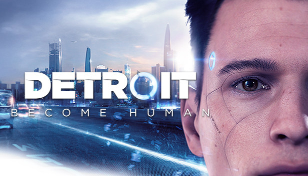

Detroit: Become Human

Género: Acción-aventura
Año: 2018
Plataforma: PC, PlayStation 4, PlayStation 5
Precio: 39.99
Valoració: 9
Descripció: Detroit: Become Human es un videojuego de aventuras de ciencia ficción ambientado en el Detroit de 2038, donde los androides diseñados para servir a los humanos comienzan a desarrollar emociones y a rebelarse contra sus amos.
← Tornar al catàleg